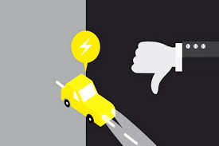
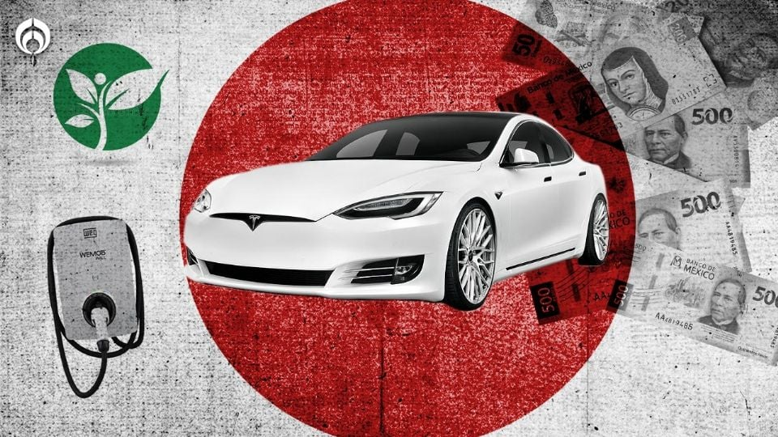

Precio de compra: Generalmente, el costo de adquisición de un carro eléctrico es más alto que el de un vehículo de combustión interna comparable. Aunque esta brecha se está cerrando y se espera que para 2026 los precios sean muy similares, e incluso que los eléctricos sean más baratos a partir de 2030, sigue siendo un factor importante para muchos compradores hoy en día.
Batería: El componente más caro del carro eléctrico es la batería. Esto influye directamente en el precio final del vehículo.
Autonomía y Ansiedad por el Rango
Autonomía limitada: Aunque los modelos más nuevos están aumentando significativamente su autonomía (muchos ya superan los 400-500 km con una sola carga), los carros eléctricos de menor precio aún pueden tener un rango limitado, lo que puede generar "ansiedad por el rango" en viajes largos o en zonas con poca infraestructura de carga.
Afectación por el clima: Las bajas temperaturas pueden reducir la autonomía de la batería de forma considerable (entre un 1% y 1.5% por cada grado Celsius por debajo de 20°C). Esto se debe a que las reacciones químicas en la batería se ralentizan y el sistema de calefacción del vehículo consume más energía.

Tiempos de Carga
Tiempo de recarga: A diferencia de los minutos que toma llenar un tanque de gasolina, cargar completamente un carro eléctrico puede llevar desde 30 minutos (en cargadores rápidos de DC) hasta varias horas (en cargadores domésticos de Nivel 2) o incluso más de 12 horas (en un enchufe doméstico estándar). Esto puede ser un inconveniente en viajes largos si no se planifican bien las paradas.
Dependencia del tipo de cargador: La velocidad de carga depende del tipo de cargador (nivel 1, 2 o 3) y de la capacidad de carga del vehículo.
Infraestructura de Carga
Disponibilidad de puntos de carga: Aunque la red de carga está creciendo rápidamente, la infraestructura pública de carga aún no es tan extensa ni tan densa como las gasolineras, especialmente fuera de las grandes ciudades. En México, a la fecha de la última información disponible (Agosto 2024), hay alrededor de 3,373 estaciones de recarga pública y 35 estaciones de carga rápida, concentradas principalmente en la Ciudad de México.
Disponibilidad de cargadores rápidos: Los cargadores rápidos (DC) son menos comunes y a menudo se encuentran en rutas principales, pero no tan distribuidos como los cargadores de menor potencia.
Degradación y Reemplazo de la Batería
Vida útil de la batería: Aunque los fabricantes suelen ofrecer garantías extensas (8 años o 160,000 km), las baterías de iones de litio se degradan con el tiempo y el uso, perdiendo capacidad de carga. La vida útil esperada de la batería está entre 10 y 20 años, similar a la del propio vehículo, por lo que es probable que no necesite ser reemplazada durante la vida útil del auto.

Impacto Ambiental de la Producción
Minería de materias primas: La extracción de materiales como litio, cobalto y níquel para las baterías tiene un impacto ambiental y social significativo, incluyendo el consumo de agua, la contaminación del suelo y los riesgos asociados a la minería.
Huella de carbono inicial: La fabricación de la batería y, por ende, del vehículo eléctrico, genera una mayor huella de carbono inicial en comparación con la fabricación de un vehículo de combustión interna. Sin embargo, esta huella se compensa y supera a lo largo de la vida útil del vehículo eléctrico gracias a la ausencia de emisiones directas.
Reciclaje de Baterías
Desafío del reciclaje: El reciclaje a gran escala de baterías de iones de litio es un desafío tecnológico y económico en desarrollo. Aunque existen procesos de reciclaje, no todos los componentes son fáciles de recuperar de manera eficiente y rentable, y la demanda de reciclaje masivo aún está por venir a medida que los primeros vehículos eléctricos llegan al final de su vida útil.